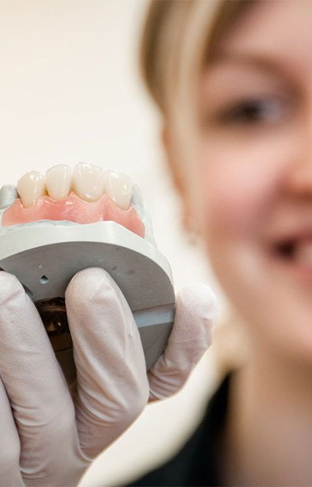

УСЛУГИ

Имплантат является опорой будущей конструкции. Имплантация зубов нужна для того, чтобы стоматолог-ортопед смог качественно восстановить утраченный зубной ряд.
Отсутствие даже одного зуба вызывает существенные неудобства в жизни человека. Чтобы избежать таких неприятностей - следует обратиться к специалисту по протезированию зубов.
Имплантат является опорой будущей конструкции. Имплантация зубов нужна для того, чтобы стоматолог-ортопед смог качественно восстановить утраченный зубной ряд.
Отсутствие даже одного зуба вызывает существенные неудобства в жизни человека. Чтобы избежать таких неприятностей - следует обратиться к специалисту по протезированию зубов.
Подробнее..